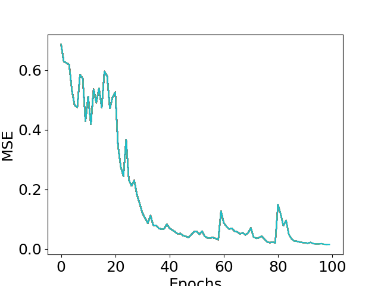
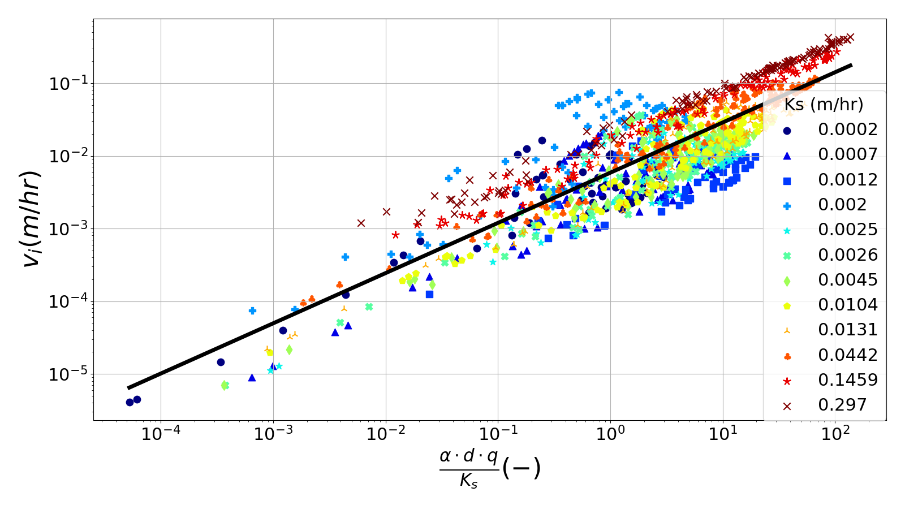
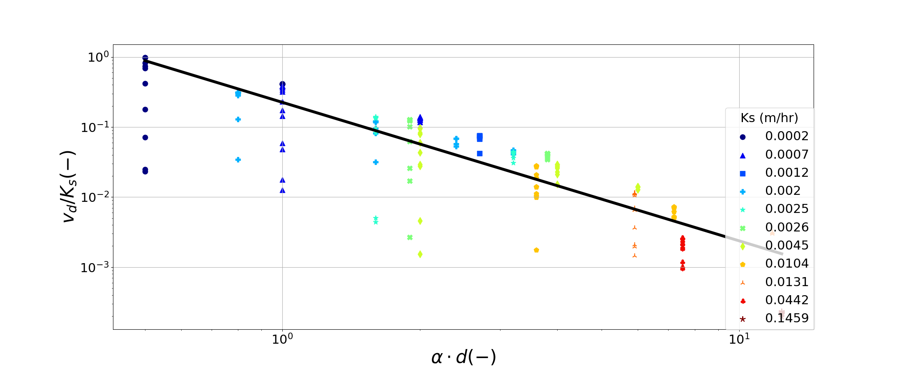
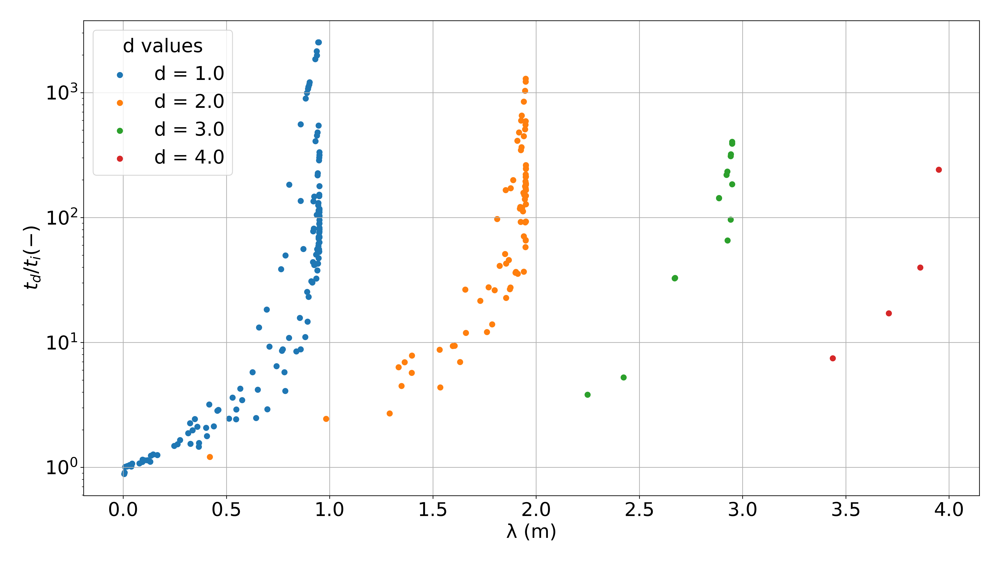
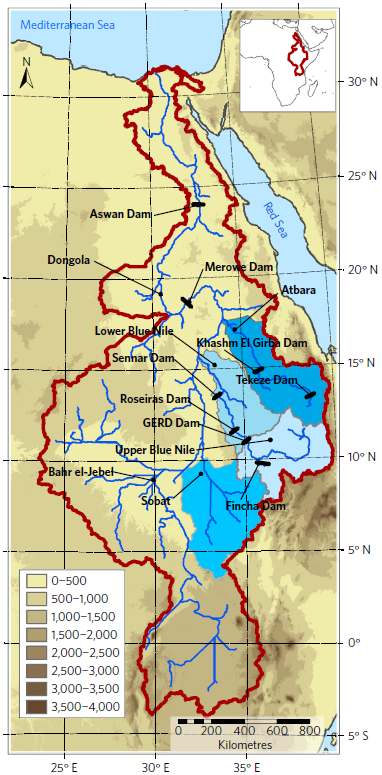
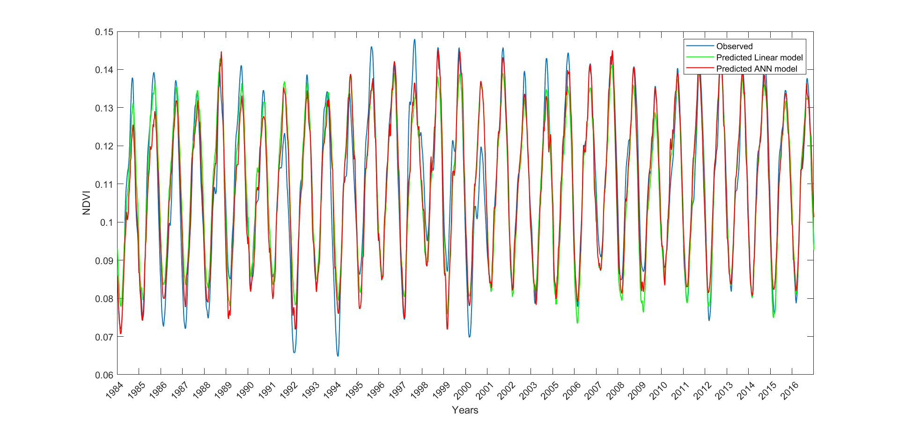
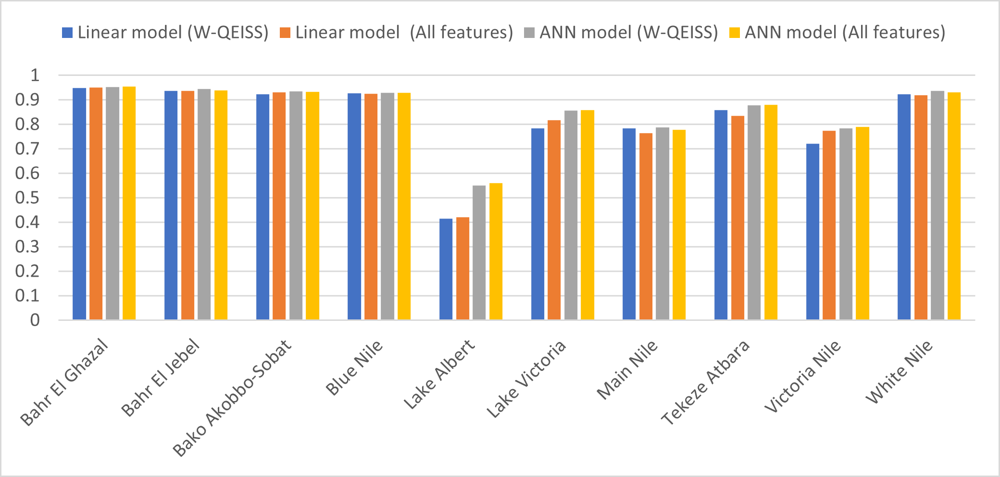
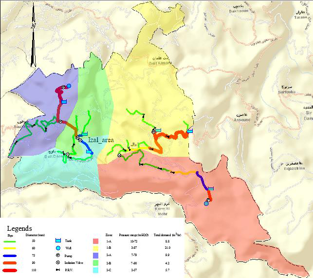
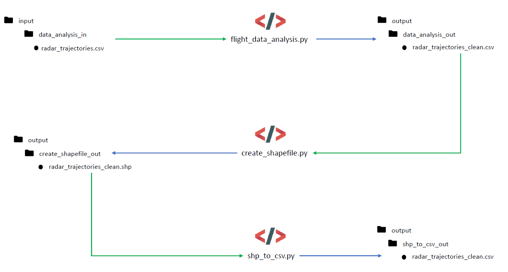

I connect physical understanding of the water cycle with machine learning and reliable data engineering — turning large, messy environmental datasets into forecasts people can reason about.
Choose an area to see the questions I work on, how I approach them, and where the experience comes from.
⌄
6 areas · select to explore
01CORE CAPABILITY Applied in research & practice
Probabilistic forecasting & applied ML
Building forecasts that communicate not only what may happen, but how confident we should be in the prediction.
PyTorchLSTM ensemblesUncertainty
How I work
I design spatio-temporal LSTM ensembles for hydrological time series, from data preparation and model training to evaluation against independent observations.
Train distributed PyTorch models across NVIDIA A100 GPUs on high-performance computing systems.
Evaluate transfer to locations with limited observations and quantify uncertainty using ensemble statistics.
Connect model spread to forecast performance, then validate against station and piezometric measurements.
Research focus · European groundwater-table forecasting and transfer learning
02 / Selected projects
Research, software & engineering in practice.
Select Expand on any project for details, methods, and supporting visuals. Public code and materials are linked where available.
01 / HYDROLOGICAL MACHINE LEARNING
FORECAST / ENSEMBLE SPREAD
Ensemble LSTM forecasting for groundwater
Developed spatio-temporal LSTM ensembles to forecast groundwater-table depth across Europe, transfer learning to locations with limited observations, and quantify uncertainty using hydro-meteorological data and model simulations.
Built a reproducible ParFlow workflow to generate paired infiltration and drainage simulations across soil parameters, infiltration rates, and soil depths. Used dimensional analysis and power-law regression to investigate controls on the time each process takes to reach steady state.
RAW DATATRANSFORMANALYSIS READYREPRODUCIBLE DATA FLOW
Climate & geospatial dataset converter
Refactored data-preparation scripts into a reusable Python package and command-line tool. Discover matching files, aggregate daily series into weekly summaries, and collect remote dataset URLs for repeatable climate and geospatial workflows.
Designed a basin-specific agricultural drought index for the Nile using weekly NDVI, hydro-meteorological predictors, feature selection, and regression models across 10 sub-basins.
Graduation project designing a fresh-water network for the water-scarce Izal area in North Lebanon. Evaluated source, population, and demand data; modelled pumps, tanks, valves, and pipe sizing; and developed the network in WaterCAD and EPANET with elevation profiles in Civil 3D.
Developed an automated Python platform to collect, clean, validate, and analyse air-quality and traffic data. Added data-quality checks and automated pipelines, and built interactive dashboards to surface pollutant trends, exceedances, and data inconsistencies for environmental monitoring and reporting.
Envisa · 2022 · Python · SQL · LaTeX
Project materials are private to the company and cannot be shared publicly.
07 / APPLIED SOFTWARE
PAVEMENT DESIGN / WEB TOOL
Web-based pavement-design tool
Developed a web-based software tool for pavement design during a civil-engineering role. The associated work also covered soil type and mechanics and applied pavement-design methods.
Built a Python workflow to organize shared SQL queries, run selected jobs against MySQL and PostgreSQL, and publish structured CSV outputs for reporting.
ProntoPro · Python · SQL · Google Drive
Internal queries, credentials, and generated data are not shared publicly.
Prepared airport radar trajectories, grouped operations by runway and traffic characteristics, and converted cleaned flight paths into GIS-ready WGS 84 shapefiles.
Python · GeoPandas · Shapely · EPSG:4326
Client flight data and associated project materials are private.
11 / ENVIRONMENTAL SYSTEMS
ACTIVITYINVENTORYIMPACTLIFE-CYCLE ASSESSMENT
Brightway2 life-cycle assessment
Prototyped Python workflows for process-based life-cycle inventory and impact calculations, with example comparisons across activities and characterization methods.
Brightway2 · Python · LCI / LCIA
A research prototype using sample database content, not a production assessment service.
12 / DATA ENGINEERING
SOURCE DATAVALIDATESYNCREPEATABLE DATA PIPELINE
Data pipeline
Developed modular data workflows for extracting, validating, and synchronizing prospect records between relational databases and connected services.
ProntoPro · Python · SQL · API integrations
Internal systems, customer records, and credentials are not shared publicly.
Regional groundwater forecasting with spatio-temporal deep learning, transfer learning, and ensemble-based uncertainty assessment.
Research question
How can data-driven models forecast groundwater-table depth across Europe, including at locations where observations are sparse or unavailable, while communicating how uncertain each prediction is?
Data and modelling approach
I independently developed an end-to-end ensemble LSTM workflow, from acquiring and preparing hydro-meteorological data through model training and evaluation. The models learn spatial and temporal patterns from climate reanalysis and numerical-model datasets. The research uses precipitation, temperature, soil moisture, water level, discharge, and groundwater information.
To study transfer to data-scarce locations, I evaluate model behaviour at unseen sites. Ensemble members provide a distribution of predictions; their spread is used to assess forecast uncertainty alongside prediction accuracy. Numerical-model outputs are also used as simulation-derived training and validation data, with results checked against ground-truth station and piezometric monitoring observations.
Computational workflow
Prepare and quality-check large hydro-meteorological datasets for spatially distributed time-series modelling.
Train spatio-temporal LSTM ensembles using PyTorch and distributed GPU computation on high-performance computing systems, including NVIDIA A100 GPUs.
Evaluate accuracy and ensemble uncertainty across locations, with particular attention to transfer to unseen and data-scarce regions.

Example model-training output from the public repository, included to illustrate the workflow rather than as a regional forecast result.
Research status and materials
The associated research manuscript is under review. The public repository contains the example training and evaluation workflow, input data for its example, and a sample output. The code can be inspected or downloaded using the links on this project card.
A computational investigation of how soil properties, infiltration conditions, and soil depth shape the time required for infiltration and drainage to approach steady state.
Scientific question
How do hydraulic properties and boundary conditions control characteristic times for soil wetting and subsequent drainage, and can those relationships be described with transferable dimensionless scaling laws?
Simulation design
I built a reproducible workflow around ParFlow to set up paired infiltration and exfiltration simulations. The experiment varies van Genuchten soil-hydraulic parameters, saturated hydraulic conductivity, imposed infiltration rate, and soil depth. Both randomly sampled parameter combinations and systematically selected fixed cases are used to examine broad patterns and controlled comparisons.
The workflow generates 1,000 randomized cases and a 100-case systematic set, spanning 12 soil types and multiple soil depths and infiltration conditions.
ParFlow simulations use physically based subsurface flow representations grounded in Richards' equation and Darcy's law. Simulation setup and analysis are scripted in Python; the computationally intensive model runs are executed separately on high-performance computing resources.
Analysis and interpretation
After processing the simulated water-content and flow outputs, I estimate steady-state response times and relate them to non-dimensional groups using Buckingham π dimensional analysis and power-law fits. The analysis considers infiltration and drainage separately, compares the characteristic times, and examines how soil depth and infiltration rate change the observed scaling.
Generate parameterized simulation inputs and batch-run scripts.
Process simulation results and calculate infiltration and drainage steady-state times.
Fit and compare dimensionless scaling relationships across soil types and depths.
Scaling relationships: Infiltration time follows λ / SSTi ∝ (α · d · q / Ks)b, while drainage time follows λ / (SSTd · Ks) ∝ (α · d)b. Here, λ is a characteristic length scale; SST is steady-state time; α, Ks, and q describe soil and infiltration properties; and d is soil depth.

Infiltration scaling across soil types and saturated hydraulic conductivities.

Drainage scaling against dimensionless soil depth.

How the drainage-to-infiltration time ratio changes with characteristic length and soil depth.
Outcome
The analysis derives separate scaling relationships for infiltration and drainage and examines their dependence on soil depth, hydraulic properties, and imposed infiltration. The research manuscript is under review; the public repository provides the workflow and plotted analysis outputs.
A reusable Python package and command-line interface for common climate and geospatial data-preparation tasks.
Purpose
The project consolidates recurring file-discovery, time-series aggregation, and dataset URL collection tasks into a small maintainable package. It separates supported package functionality from retained project-specific legacy scripts.
Core capabilities
Find files matching directory, extension, and filename-pattern criteria.
Aggregate daily CSV time series into weekly summaries for a selected variable and subbasin.
Collect remote data URLs for download workflows, including MERRA-family NetCDF datasets.
Expose these tasks through a command-line interface and reusable Python modules.
Engineering approach
The supported implementation lives in a Python package with separate core, downloader, and CLI modules. This keeps data discovery and aggregation logic reusable and testable, and replaces duplicated hard-coded workflows with explicit command arguments.
The repository includes installation instructions, sample commands, and tests for the package. Legacy scripts are clearly separated and documented as historical or dataset-specific examples.
Example workflow: aggregate CSV inputs into weekly totals, list files for a particular dataset, or generate a URL list for a specified date range.
A basin-specific drought-monitoring study for the Nile River Basin, built around weekly vegetation observations and hydrometeorological predictors.
Study design
The MSc thesis applied the FRIDA framework to design an index tailored to the Nile's varied climate, terrain, and land cover. The basin was divided into 10 sub-basins using hydrological, climatic, and land-cover characteristics; the analysis used 1,664 weekly observations spanning 1984–2016, excluding 2004.
Data and modelling
Observed NDVI was selected as the target because of its relevance to agricultural drought. Candidate predictors included precipitation, minimum and maximum temperature, evapotranspiration, river discharge, soil moisture, and SPI, drawing on remote sensing and ERA5/reanalysis products.
Screen candidate inputs with W-QEISS feature selection, reducing model complexity while retaining predictive performance.
Construct and compare linear-regression and artificial-neural-network indices at basin and sub-basin scales.
Evaluate how spatial resolution, surface area, land cover, and sub-basin definition influence the results.

Study area and Nile sub-basins used for basin-specific index design.

Observed NDVI compared with linear and neural-network model estimates.

Comparing all candidate features with the W-QEISS-selected subset across sub-basins.
Findings and materials
The thesis reports strong index performance in most sub-basins; results for 90% were described as outstanding, while weaker cases were associated with factors including land cover and sub-basin area. The analysis used Python and MATLAB.
Scope: The public MATLAB repository linked on the card contains related multi-objective feature-selection algorithms, not the complete drought-index analysis or its source data.
A civil-engineering graduation project to plan a reliable fresh-water distribution network for Izal, a water-scarce area in North Lebanon.
Planning and design
The work addressed chronic water shortages in Izal, North Lebanon. The team collected and analysed terrain, population, demand, and water-source information, including a new source that enabled a redesign of the existing supply network.
Hydraulic network
The team developed two design alternatives: an economical option that retained and modified existing tanks, and a more practical but higher-cost option with proposed new tank locations. Both designs included pumps, tanks, valves, and pipe sizing, and were evaluated for flow and pressure using WaterCAD and EPANET. Civil 3D and AutoCAD supported terrain profiles and engineering drawings.
Translate source, demand, population, and elevation data into hydraulic design inputs.
Compare cost and operational practicality across two network layouts.
Model network performance and document pipe diameters, equipment, and zone demands.

Proposed Izal network layout from the graduation-project report.
Project report: The full graduation-project report is available to download from the project card, alongside the public project repository.
An automated environmental data workflow and dashboard for air-quality and traffic monitoring.
Data pipeline
I developed a Python-based platform to collect, clean, validate, and analyse air-quality and traffic data. Automated quality checks helped identify inconsistencies in source measurements before analysis and reporting.
Monitoring and reporting
Interactive views brought pollutant and traffic measurements together for analysis over selectable time periods. The dashboard surfaced station-level trends, threshold exceedances, hourly patterns, and supporting reports; scheduled workflows refreshed monitoring data and report outputs.
Automate recurring collection, normalization, validation, and reporting steps.
Explore pollutant concentrations, station comparisons, exceedances, and traffic trends.
Keep the dashboard and report library updated through scheduled data workflows.
Confidentiality: The project code, datasets, and supporting documents are private to the company and cannot be shared publicly.
A browser-based pavement design tool that adapts the AASHTO 1993 method to account for traffic, climate, reliability, and asphalt-mixture behaviour.
Design workflow
The application guides users through design inputs such as traffic loading (ESALs), design period, climate, reliability, layer materials, and subgrade properties, then calculates and presents a layered pavement structure.
Material response
Rather than treating asphalt as a single fixed material, the tool incorporates dynamic-modulus estimates based on mixture properties and temperature/frequency relationships, including Witczak and sigmoidal-model approaches represented in the project versions. The work connects pavement mechanics and soil-material knowledge with an interactive engineering workflow.
Collect and validate design and material inputs through linked web pages.
Estimate asphalt dynamic modulus from mixture and climate conditions.
Calculate and display recommended layer thicknesses for the design scenario.
Confidentiality: The application source code, design documents, and company project materials are private and cannot be shared publicly.
An ongoing personal learning and knowledge-sharing project focused on practical Autodesk Civil 3D workflows.
Focus
The channel shares practical Civil 3D tutorials for civil-engineering design workflows, with step-by-step walkthroughs and examples.
Build and share practical proficiency with Civil 3D tools and workflows.
Explain common civil-engineering design tasks through instructional videos.
Continue developing the channel as an ongoing personal project.
Explore: Visit the Sami Miaari YouTube channel to view the tutorials.
A repeatable SQL-to-report workflow that organizes shared queries, executes selected database jobs, and publishes analysis-ready CSV files.
Query management
Python modules retrieve and organize query files from shared storage, apply optional name-based filters, and run supported MySQL or PostgreSQL queries. Query-owner and update-age metadata can be collected to support review of the query library.
Output workflow
Execute the selected query set through a common command-line entry point.
Save tabular results as CSV files in a structured local output tree.
Synchronize generated files to corresponding shared-drive folders for downstream reporting.
Privacy: The internal query library, database credentials, and generated business data are not included in this portfolio.
An airport flight-track workflow for cleaning radar trajectories, organizing operational groups, and producing GIS-ready vector data.
Trajectory preparation
The analysis checks track-point counts, timestamp order and uniqueness, update rates, and altitude direction. It removes tracks with too few observations, sorts points chronologically, and corrects invalid elevation values before spatial export.
Operational groups and vector output
Flight operations are organized around operational attributes such as runway, arrival or departure type, traffic cluster, and stage length. For GIS use, each cleaned flight is represented as a WGS 84 LineString built from longitude and latitude, with flight, operation, and runway attributes, and written to an EPSG:4326 shapefile. A companion conversion step returns vector attributes and coordinates to CSV.

Flight-track data preparation and vector export workflow.
Clustering scope: The groups are operational traffic categories, not a spatial-density clustering model. Client flight data and associated materials are not shared publicly.
A Python prototype for repeatable process-based life-cycle inventory and impact calculations with Brightway2.
Calculation workflow
The example sets a Brightway2 project and database, resolves activities from their names or codes, defines a functional demand, and runs life-cycle inventory (LCI) and life-cycle impact assessment (LCIA) calculations using characterization methods.
Comparative analysis
Calculate an impact score for a selected activity and method.
Reuse factorized inventory calculations while evaluating multiple activities.
Switch characterization methods to compare impacts across assessment perspectives.
Scope: The included scripts are a research prototype and example, using sample FORWAST database activities. They do not constitute a complete ecoinvent integration or a verified product assessment.
A modular internal data pipeline for extracting, validating, and synchronizing prospect records across database and service boundaries.
Pipeline responsibilities
The workflow separates database access, extraction, record processing, status updates, and uploads into focused Python modules. It supports contact-data checks and integrations with external services so records can be prepared and synchronized through repeatable jobs rather than manual one-off handling.
Operational approach
Read and write structured records through relational database connections.
Validate and update contact or prospect status using the relevant service integrations.
Keep credentials in environment configuration rather than in the portfolio or public code.
Privacy: This was internal company tooling. Source code, customer records, service credentials, and operational configuration are not shared publicly.
03 / Professional experience
Experience across research, engineering & data.
A foundation in civil and environmental engineering grew into research at the intersection of hydrology, data, and machine learning.
2023 — NOW
PhD Researcher
Forschungszentrum Jülich
Hydrology and geosciences research, alongside PhD study at the University of Bonn. Building and evaluating ML forecasts for water-table dynamics, and investigating physical controls on subsurface flow.
2022
Environmental Engineer
Envisa
Automated environmental measurement workflows and reporting; developed customer-facing monitoring dashboards and geospatial emissions analysis.
2021 — 2022
Data Engineer
ProntoPro
Built Python data pipelines, quality checks, and operational automation to move collected data into production systems.
JUN — AUG 2018
Civil Engineer
Transportation Engineering Solutions and Technologies (TEST)
Beirut, Lebanon · 3-month position
Contributed to civil and transportation engineering work, including development of a web-based pavement-design tool and applied work involving pavement design and soil mechanics.
Curiosity, rigor, and useful outcomes
Let’s connect the right pieces.
Interested in applied AI, hydrology, or environmental data systems?